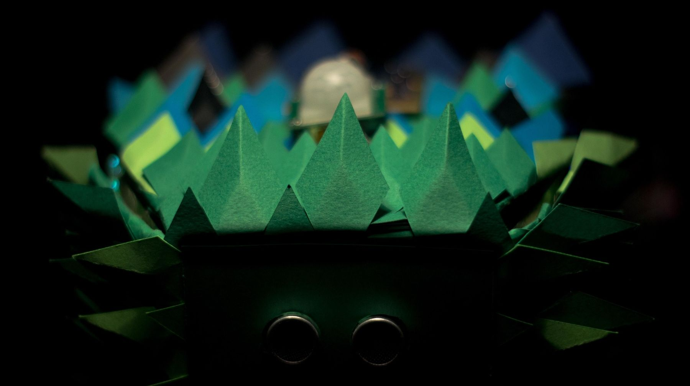
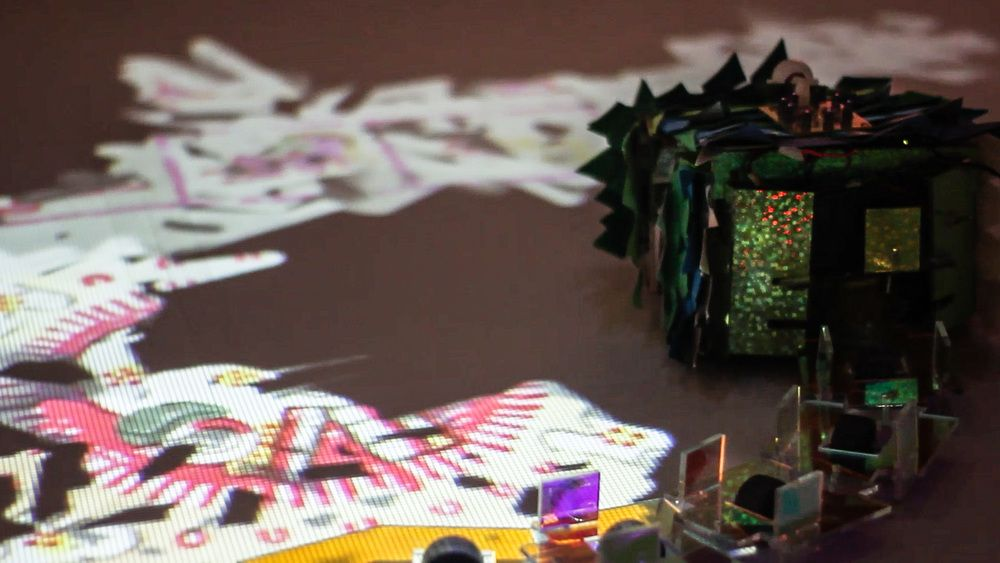
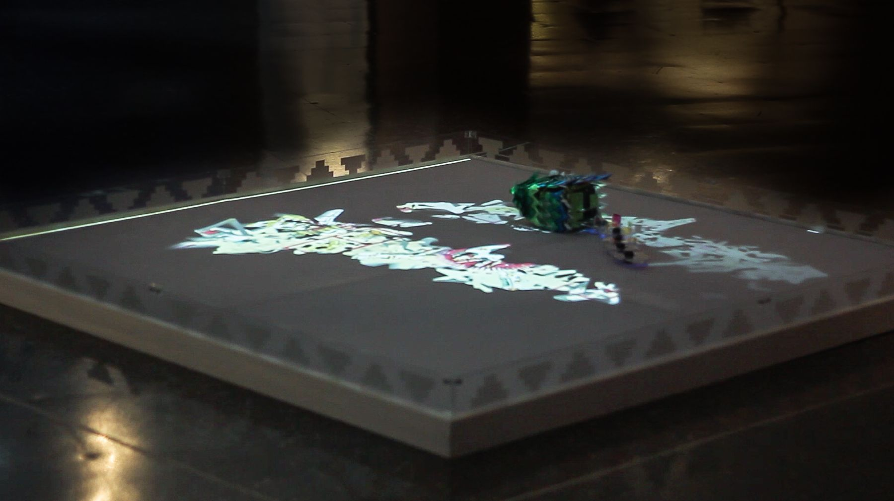
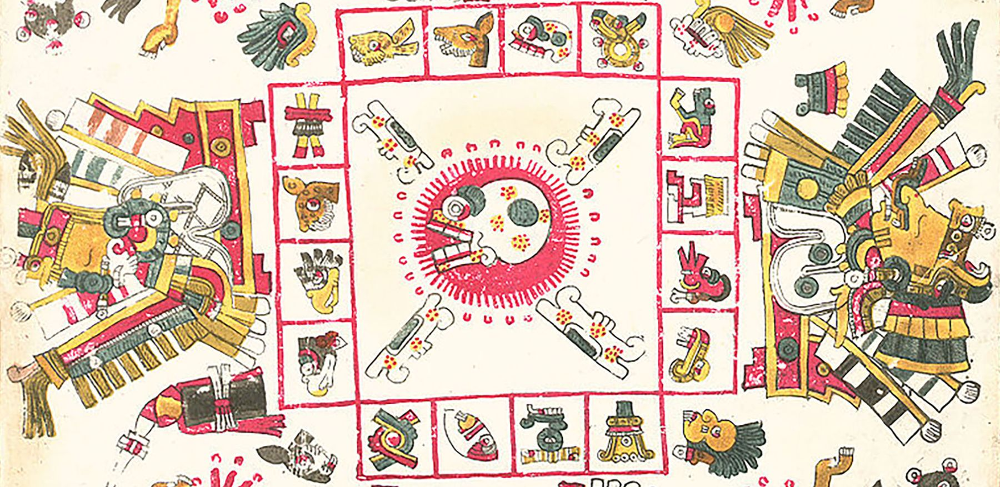

Quetzalcóatl-bot. Between Code and Codex

Quetzalcóatl-bot is a representation of the Mesoamerican deity of light, knowledge, and art. Through robotics, mapping and computer vision, this mechanic feathered serpent becomes a contemporary storyteller of ancient myths. It's also a counter-writing platform to experiment with the coexistence of codex and creative coding.
Interactive Robotic Installation
Robotics, computer vision, code, real-time image capture, interaction, projection mapping, generative writing, acrylic, paper, Arduino, PIR, Infrared light. Robot 72 cm x 22 cm x 16 cm / Projection 1.90m x 1.90m.
Storytelling through body movement.
The piece conceptually uses the link between word and image, movement of human and non-human bodies, and the cultural information contained in the Borgia's Codex, to articulate another method of storytelling and writing -a counter-writing, actually. During this process, we observe a new kind of mythical writing dynamic evolving within the techno-mythical scenario of the work: the narration of a cosmogonic episode, the implementation of a projection and a motion capture system, and the gestural behavior of a robot linked to the activity of the public.


The Myth.
In the myth, the luminous and sonorous murmur of the god Quetzalcóatl tears apart the darkness and the primordial silence while rising from the underworld after having stolen the sacred bones that contain a life-giving material. During its ascent, it blows inside a snail and produces a sound that acquires the spiral shape of its instrument, simultaneously generating the first cultural configuration of the sound and the first formal graphic representation of the word: the voluta. An element that formalizes the link between verbal expression and image.

Writing as destruction.
Quetzalcoatl-bot’s serpentine activity acts as a writing method dynamically motivated by the viewer's circulation around the technical-symbolic system of the work. This movement becomes a dialogue framework between life forms to display and exchange signs that potentially can transform space.
Etymologically, writing imposes a form, forces linearity and produces a regime of (in)formation on objects and materials. However, in this work, the surface is not passive against the destructive gesture of writing and creates a counter-writing.
Counter-writing.
The work displays a kind writing that accentuates the resistance of matter and abandons the conservation of information in favor of a fading movement of signs. Counter-writing thus performs against the traditional and social function of the codex - safeguarding information and preserving a mythological narrative - to impose on it the logic of the eternal beginning, the blank page or the eternal vacuum.
If writing as technology supposes a state of conservation and, therefore, a triumph over the wear of materials and the loss of memory, this work proposes the inverse movement and bets for distortion, fragmentation, and fading.
Exhibitions
- ZERO1. Festival of Arts and Digital Cultures. Tour de la Chaîne, La Rochelle, France, 2017.
- Electronic November Alliance Français, Buenos Aires, Argentina, 2017.
- 105º National Art Hall. Installation and New Media Awards. Palais de Glace, Buenos Aires, Argentina, 2016.
- Poetic Hybrids. First Congress of Robotics. Universidad del Salvador, Buenos Aires, Argentina, 2016.
- Fase 7. Art, Science and Technology Fair. Recoleta Cultural Center, Buenos Aires, Argentina, 2015.
Press
- Inlets/Outlets Damián Zantleifer
- Malacara Press